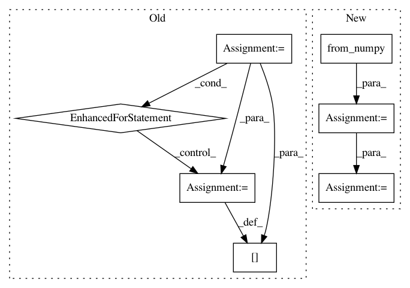

4df11055e61fa6c9fede6b2114c8ce05de9a035e,slm_lab/agent/algorithm/dqn.py,DQNBase,compute_q_target_values,#DQNBase#Any#,57
Before Change
// Make future reward 0 if the current state is done
float_data_list = [
"states", "actions", "rewards", "dones", "next_states"]
for k in float_data_list:
batch[k] = Variable(torch.from_numpy(batch[k]).float())
// print("batch")
// print(batch["states"])
// print(batch["actions"])
// print(batch["rewards"])
// print(batch["dones"])
// print(1 - batch["dones"])
q_vals = self.net.wrap_eval(batch["states"])
// print(f"q_vals {q_vals}")
q_targets_all = batch["rewards"].data + self.gamma * \
torch.mul((1 - batch["dones"].data),
After Change
// Depending on the algorithm this is either the current
// net or target net
q_next_st_vals = self.eval_net.wrap_eval(batch["next_states"])
idx = torch.from_numpy(np.array(list(range(self.batch_size))))
q_next_st_vals_max = q_next_st_vals[idx, q_next_actions]
q_next_st_vals_max.unsqueeze_(1)
// Compute final q_target using reward and estimated
// best Q value from the next state if there is one
// Make future reward 0 if the current state is done
In pattern: SUPERPATTERN
Frequency: 3
Non-data size: 7
Instances
Project Name: kengz/SLM-Lab
Commit Name: 4df11055e61fa6c9fede6b2114c8ce05de9a035e
Time: 2017-12-08
Author: lgraesser@users.noreply.github.com
File Name: slm_lab/agent/algorithm/dqn.py
Class Name: DQNBase
Method Name: compute_q_target_values
Project Name: kengz/SLM-Lab
Commit Name: aa4ae658489c919dbca4141c7498b05ac0cac6d8
Time: 2019-05-25
Author: kengzwl@gmail.com
File Name: slm_lab/agent/__init__.py
Class Name: AgentSpace
Method Name: act
Project Name: facebookresearch/Horizon
Commit Name: 9cf8f6cdf6a2008843cb37da6e34b8d10353b0bf
Time: 2019-12-12
Author: kittipat@fb.com
File Name: ml/rl/preprocessing/sparse_to_dense.py
Class Name: PythonSparseToDenseProcessor
Method Name: process